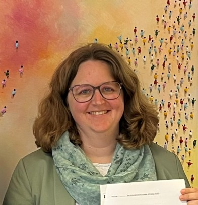
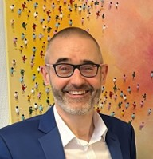
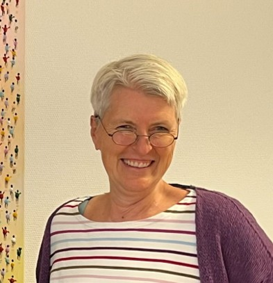

Entwicklungsinstitut für angewandten Umweltschutz gUG
(haftungsbeschränkt)
Wissenschaftliche Exzellenz, praktische Umsetzung und nachhaltige Innovationen für Wasserwirtschaft, Kreislaufwirtschaft und Klimaschutz.
EAU verbindet wissenschaftliche Kompetenz mit dem Anspruch, innovative Lösungen in die praktische Anwendung zu bringen.


Dr.-Ing. Sabrina Breitenkamp verbindet Kreislaufwirtschaft, Stoffstrommanagement und Ressourceneffizienz mit modellgestützter Planung und Bewertung. Ihre Schwerpunkte liegen auf Stoff-, Energie- und Treibhausgasbilanzen sowie auf der Analyse und Optimierung technischer Systeme und Verfahrensketten. Dabei betrachtet sie Fragestellungen ganzheitlich – von einzelnen Verfahren über Stoffströme bis hin zu komplexen Infrastruktur- und Versorgungssystemen. Ein besonderer Fokus liegt auf der Übertragung wissenschaftlicher Methoden in praxistaugliche Lösungen – insbesondere auch in digitale Werkzeuge für Planung, Bewertung und Entscheidungsunterstützung.

Prof. Dr.-Ing. Stephan Köster steht für die strategische Weiterentwicklung nachhaltiger Wasser- und Abwassersysteme. Seine Schwerpunkte liegen auf innovativen Versorgungskonzepten, resilienten Infrastrukturen und der Entwicklung neuer Lösungsansätze für die Siedlungswasserwirtschaft. Er bringt langjährige Erfahrung in der Konzeption und Steuerung komplexer Forschungs- und Verbundprojekte sowie in der Zusammenarbeit mit Kommunen, Unternehmen und Forschungspartnern ein. Ein besonderer Fokus liegt auf der Verbindung wissenschaftlicher Innovationen mit langfristigen Entwicklungsstrategien und ihrer Überführung in tragfähige Lösungen für die wasserwirtschaftliche Praxis.

Dr.-Ing. Maike Beier verfügt über umfassende Erfahrung in der kommunalen und industriellen Wasser-und Abwasserwirtschaft. Ihre Schwerpunkte reichen von biologischer Abwasserbehandlung, Stickstoff- und Phosphorelimination und -rückgewinnung über Ressourcen- und Energieeffizienz bis zur Reduzierung von Treibhausgasemissionen. Weitere Kompetenzen liegen u.a. in der modellgestützten Optimierung, der strategischen Investitionsplanung sowie in der technischen, ökologischen und wirtschaftlichen Bewertung neuer Lösungen. Ein besonderer Fokus liegt auf der Überführung wissenschaftlicher Erkenntnisse in praxistaugliche Konzepte und belastbare Entscheidungsgrundlagen für die kommunale und industrielle Wasserwirtschaft.
Die Herausforderungen des Klima- und Ressourcenschutzes erfordern neue Wege des Wissens- und Technologietransfers zwischen Forschung, Wirtschaft, Kommunen und Gesellschaft.
Mit der Gründung der EAU möchten wir wissenschaftliche Erkenntnisse schneller in die praktische Anwendung überführen und gleichzeitig innovative Lösungen für die Wasser- und Kreislaufwirtschaft fördern.
Als gemeinnützige Organisation verfolgen wir das Ziel, Forschung, Bildung und Umsetzung miteinander zu verbinden und dadurch einen messbaren Beitrag zu nachhaltigen und resilienten Infrastrukturen zu leisten.
Unsere Arbeit basiert auf wissenschaftlicher Qualität, interdisziplinärer Zusammenarbeit und dem Anspruch, nachhaltige Lösungen für kommende Generationen zu entwickeln.